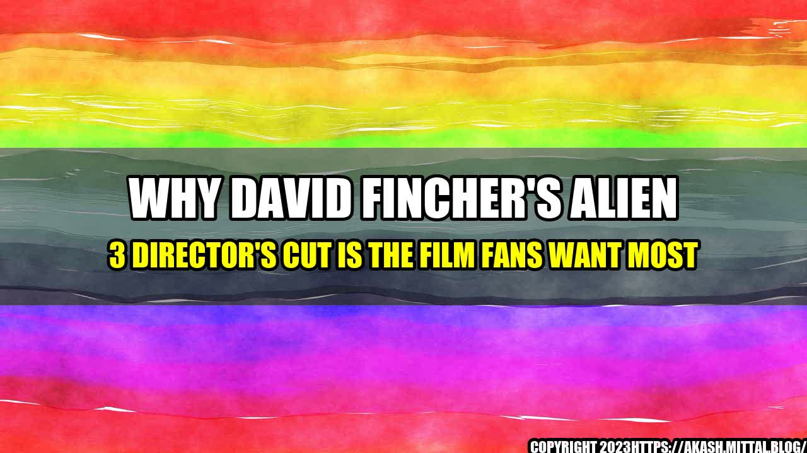

Why David Fincher's Alien 3 Director's Cut Is the Film Fans Want Most
The Story
David Fincher's Alien 3 was released in 1992 and it was a commercial and critical disappointment. The studio interfered with Fincher's vision and the final product was a compromised version of the film, that left many fans disappointed. However, over the years, the film has gained a cult following and even though Fincher disowned the theatrical release, he has expressed his desire to create his own cut of the film.
After years of speculation, it was finally announced that the Alien 3 Director's Cut will be released on Blu-ray and digital formats this August. Fans are excited to see what Fincher's true vision for the film was and why it was so different from the theatrical version.
One way to measure the excitement of fans for the Alien 3 Director's Cut is to look at social media engagement. The release announcement on Twitter received over 14,000 likes and 6,000 retweets, indicating a high level of interest. Additionally, the hashtag #Alien3directorscut has been trending on Twitter and Instagram, with fans sharing their thoughts and expectations for the film.
Another way to measure the demand for the Director's Cut is to look at pre-order sales. The Blu-ray version of the film has been in the top 10 pre-order bestsellers on Amazon for several weeks, indicating a high level of interest among consumers.
Conclusion
David Fincher's vision
The main reason why fans are excited for the Alien 3 Director's Cut is because they want to see David Fincher's true vision for the film. The theatrical version of the film was heavily edited and re-shot by the studio, which resulted in a compromised product that did not reflect Fincher's ideas and intentions. Fans are curious to see how the Director's Cut will differ from the theatrical version and how it will showcase Fincher's talent as a filmmaker.
Creative control
The release of the Alien 3 Director's Cut is also significant because it highlights the importance of creative control in filmmaking. Fincher's experience with Alien 3 is a cautionary tale for filmmakers who sign on to direct studio projects without having full control over the creative process. The Director's Cut is a way for Fincher to reclaim his vision and for fans to see what could have been if the studio did not interfere.
Fan engagement
The excitement surrounding the release of the Alien 3 Director's Cut is also a testament to the power of fandom. Despite being a commercial and critical disappointment, the film has retained a loyal following over the years and fans have been vocal about their desire to see Fincher's cut of the film. The Director's Cut is a way for the fans to engage with the film and to express their support for Fincher's work.
Curated by Team Akash.Mittal.Blog
Share on Twitter Share on LinkedIn